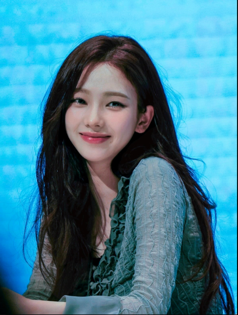
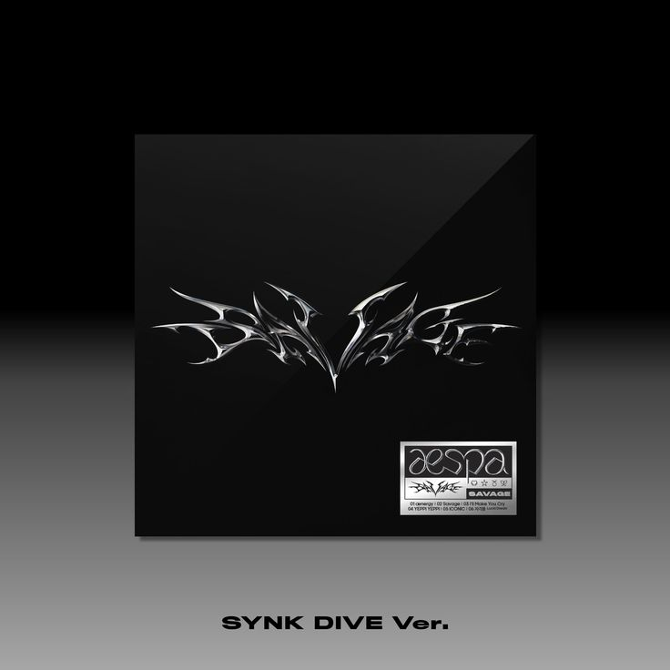
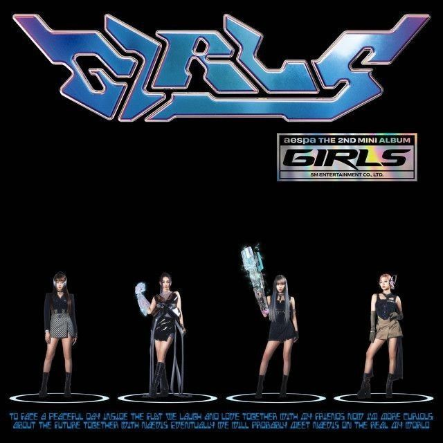
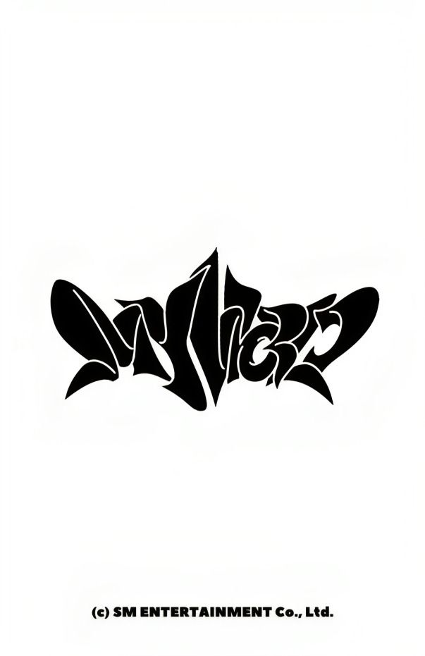
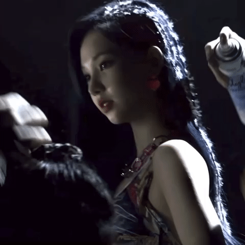
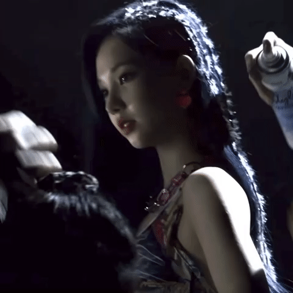

KARINA alias Yu Jimin
Karina, yang memiliki nama asli Yoo Ji-min, lahir pada 11 April 2000, adalah seorang penyanyi dan penari asal Korea Selatan yang dikenal sebagai leader, main dancer, lead vocalist, dan visual dari grup K-pop aespa yang dibentuk oleh SM Entertainment. Ia diperkenalkan sebagai anggota pertama aespa pada tahun 2020 dan sejak itu telah menjadi salah satu ikon dalam industri musik K-pop. Sebelum debut, Karina menjalani pelatihan selama lebih dari empat tahun di SM Entertainment, di mana ia mengembangkan bakat menarinya dalam berbagai genre. Debut resmi aespa terjadi pada 17 November 2020 dengan lagu "Black Mamba", yang langsung mendapatkan perhatian luas dari penggemar K-pop di seluruh dunia.
Karina dikenal dengan gaya yang chic dan fashionable, sering kali tampil dengan berbagai konsep yang menarik. Di atas panggung, ia menampilkan energi tinggi dan kemampuan menari yang memukau, menjadikannya pusat perhatian dalam setiap pertunjukan. Selain itu, pesonanya yang menawan membuat penggemar jatuh cinta, baik saat tampil maupun di luar panggung. Sejak debut, aespa telah merilis beberapa lagu dan album sukses, termasuk "Next Level" (2021), "Savage" (2021), "Black Mamba" (2020), dan "Forever" (2021). Karina juga terlibat dalam berbagai proyek solo dan kolaborasi, menunjukkan kemampuannya dalam berbagai genre musik.
Dalam kehidupan pribadinya, Karina dikenal sebagai pribadi yang ceria dan ramah, sering berinteraksi dengan penggemar melalui media sosial dan siaran langsung untuk berbagi tentang kehidupan sehari-harinya dan perkembangan kariernya. Karina dan aespa telah menerima banyak penghargaan dan nominasi, termasuk penghargaan di Mnet Asian Music Awards dan Seoul Music Awards, berkat prestasi mereka yang mengesankan di industri musik. Sebagai inspirasi bagi banyak penggemar, terutama bagi mereka yang ingin mengejar karier di dunia seni pertunjukan, Karina menunjukkan bakat dan dedikasinya yang luar biasa. Dengan kombinasi bakat, visual, dan kepribadian yang menarik, ia terus menarik perhatian penggemar di seluruh dunia dan diprediksi akan menjadi salah satu ikon besar di masa depan.
Leader dan Main Dancer AESPA
Grup: AESPA
Korea Selatan
Perjalanan Karina dari Debut Hingga Sekarang
Karina memulai debutnya pada tahun 2020 bersama AESPA dengan lagu "Black Mamba", sebuah lagu yang langsung menjadi hits dan membawa nama grup ini melambung di kancah musik internasional. Sebagai seorang trainee di SM Entertainment selama beberapa tahun, Karina menunjukkan ketekunan dan kerja keras yang akhirnya terbayar saat debutnya.
Setelah debut, Karina bersama AESPA terus mendapatkan perhatian dunia, terutama setelah lagu-lagu seperti "Next Level" dan "Savage" dirilis. AESPA dikenal dengan konsep futuristik dan visual yang menarik, dan Karina menjadi sorotan berkat kemampuan menarinya yang luar biasa serta suaranya yang kuat. Pada tahun 2021, grup ini meraih penghargaan rookie di berbagai ajang penghargaan musik bergengsi, termasuk MAMA dan Golden Disk Awards.
Seiring perjalanan karirnya, Karina juga berkembang menjadi ikon fashion dan kecantikan, dengan berbagai kolaborasi dengan merek terkenal. Ia diakui sebagai salah satu idola generasi keempat yang paling berpengaruh di dunia K-pop, dan terus menginspirasi banyak orang dengan kepribadiannya yang penuh semangat, tetapi tetap rendah hati di tengah popularitas yang terus meningkat.
Album AESPA
1. Album "Savage" (2021)
Album pertama dari AESPA, "Savage", mencakup lagu-lagu hit seperti "Next Level" yang membawa grup ini meraih popularitas internasional.
Harga: $25
2. Mini Album "Girls" (2022)
Mini album kedua, "Girls", menampilkan lagu-lagu baru yang menunjukkan perkembangan musikal AESPA serta peningkatan popularitas Karina.
Harga: $30
3. Album "MY WORLD" (2023)
Album terbaru, "MY WORLD", memperlihatkan kedewasaan musik AESPA dan semakin banyak kolaborasi dengan artis lain, menandakan evolusi Karina dan grup.
Harga: $35
B O N U S
 
